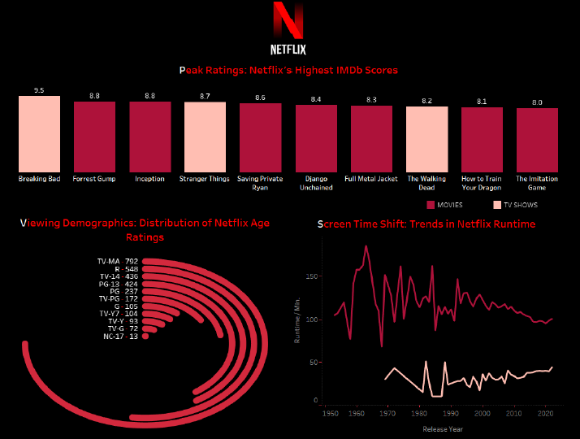

A static Tableau visualization exploring IMDb ratings, viewer age categories, and content length trends in Netflix releases.
This project presents a static visualization designed in Tableau, analyzing how Netflix content compares with IMDb ratings across genres, age categories, and average durations. It includes a bar chart of top-rated titles, a radial chart for age distribution, and a line chart showing shifts in average duration by content type. The layout prioritizes storytelling over interactivity, with a clear narrative supported by well-chosen visual elements.
• Static multi-chart layout designed in Tableau
• Data preparation handled in Excel for consistency
• Clear and minimal visual elements to support visual storytelling
• Unified Netflix-themed color palette and branding across all charts
Tableau, Excel, Visual Design
• Balancing visual richness with layout clarity
• Avoiding bias from unrated content (2,282 rows excluded)
• Using static visual elements to communicate multi-dimensional data
This project emphasized how visual design and thematic clarity can enhance the communication of data. It reinforced the power of layout and color in guiding user attention, especially in a non-interactive context like static presentations.

Figure 1. A static Tableau visualization combining a bar chart of IMDb-rated Netflix titles, a radial distribution of age ratings, and a line chart showing how content length has evolved across release years.